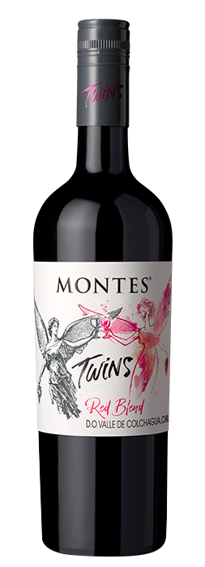

Vino
Venecia
Vino Venecia desde 2022

Nuestros Productos
El Enemigo Malbec 750ml
Q243.00
El Circo Tempranillo 750ml
Q68.00
Roscato Rosso Provincia Di Pavia 750ml
Q94.00
Meiomi Pinot Noir 750ml
Q250.00
Montes Twins Red Blend 750ml
Q130.00

El Enemigo Bonarda 750ml
Q243.00
Win Vino Sin Alcohol Tinto 750ml
Q114.00
Catena Appellation La Consulta Malbec 750ml
Q189.00
NUESTRO MEJOR VINO
Vino Venecia
Q500.00
Proceso de Producción
-> Se agregan 2 litros de mosto (Jamaica) y 1lb de azúcar en una olla mediana.
-> Ya disuelto el azúcar, se vertirá en el garrafón.
-> Se repite el proceso 5 veces hasta llenar el garrafón.
Para la activación de la levadura se necesitará:
-> Un litro de esencia y se vertirá en una ollita pequeña, en ella también irán pizcas de levadura, se deshacerá por la temperatura del fuego.
-> La levadura se convertirá en alcohol.
-> A continuación se vertirá la levadura en el garrafón para que se incorpore con la esencia.
-> Para finalizar se le vertirá el jugo de un limón.
-> Se sellara el garrafón, para que no le entre aire, y así poder concentrar más el vino.
Preguntas Frecuentes
¿Qué es la fermentación?
La fermentación o metabolismo fermentativo es un proceso catabólico de oxidación incompleta, que no requiere oxígeno, y cuyo producto final es un compuesto orgánico. Es propio del metabolismo de muchos microorganismos y según los productos finales, existen diversos tipos de fermentación.
¿Qué pasa al fermentarse los alimentos?
Al fermentarse, los alimentos pasan por un proceso en que las bacterias naturales se alimentan de sus azúcares y almidones, produciendo ácido láctico. La fermentación hace que los alimentos se conserven por más tiempo sin necesidad de químicos, y les brinda un sabor característico.
¿Qué significa fermentación en el vino?
La fermentación hace referencia a la fase del proceso de vinificación en la que el mosto se transforma en vino. Es una fase crucial durante la que se debe cuidar cada detalle, con el fin de obtener los mejores matices, encargados de alegrar los paladares que disfrutarán de los futuros vinos.
¿Cuál es el siguiente paso después del mosto limpio?
Una vez que el mosto está limpio el siguiente paso es la fermentación alcohólica. Esta fermentación la llevan a cabo las levaduras, nuestros aliados microscópicos, que consumen los azúcares del mosto para producir alcohol y gas carbónico.
La fermentación alcohólica dura en torno a 21 días y durante este proceso la temperatura se controla electrónicamente para que se mantenga entre 16 y 18 ºC. Esto es posible gracias a las camisas que rodean los depósitos que permiten la circulación de agua fría a través de ellas.
Equipo de Producción
-- Jazmín Juárez -- Shirly Tunay -- Dania Chaclan -- Dulce Pacheco -- Angie Marroquín -- Sara Ávila -- Luis Pacheco -- Karol Rodas -- Zusan Maldonado --